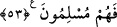

dâvetini kabul etmelerini bekleme. Çünkü sen ölülere işittiremezsin. Kâfirlerin de
duyuları hakka kapalı olduğu için onlar ölülere benzer. Onlar, Allâh’ın daha kendilerini
yaratmadan kendisine ve peygamberlerine îman etmeyeceklerini bildiği kimselerdir. Bu
âyette dirilerin hayattan bir istifâdeleri olmadığı zaman ‘ölüler’ diye de
isimlendirildiklerine delil vardır.
Mü’minlerin emîri Ali (r.a.) der ki: “Mal biriktirenler canlı oldukları halde ölüdürler.
Âlimler ise kıyâmete kadar hayattadırlar. Cesedleri kaybolur, ama eserleri insanlar
arasında mevcuddur.”
Bilesin ki isyan kalbin hastalığı olduğu gibi inkâr da kalbin ölümüdür. İnkâr etmek
sûretiyle kalbi ölen kimsenin kulağı tamamen sağır olur. Artık ona asla nasihat fayda
vermez. İsyan etmek sûretiyle kalbi hasta olan kimse ise hasta gibi zayıf işitir.
İşitmesinin ilk hâline dönene kadar hastalığının izâlesi için tedâviye ihtiyaç duyar.
Sonra Allah Teâlâ şöyle buyurarak başka bir teşbihe geçti:
“Arkalarını dönüp giderlerken” dâvet edeni arkalarına attıkları ve ondan kaçtıkları
halde ondan yüz çevirmişlerken, sırtını konuşana dönen “sağırlara o dâveti
işittiremezsin.”
“__WORD__ (sağırlar)” kelimesi, “__WORD__ın çoğuludur. Sağırlık, işitme duyusunun
kaybedilmesidir. Hakk’a kulak vermeyen ve onu kabul etmeyen kimse ona
benzetilmiştir. Nitekim el-Müfredât’ta böyle geçmektedir.
İşittirememe hükmünün onların arkalarını dönüp gitmelerine bağlanması, kâfirlerin
hallerinin kötülüğünün son noktaya ulaştığını beyan etmek ve şu iki kötü hasleti
kendilerinde topladıklarına dikkat çekmek içindir: Kulaklarının haktan ırak olması ve
kendilerinin hakka kulak vermekten yüz çevirmeleri. Onlarda bu iki hasletten birisi bile
olsa onlara (kötülük olarak) yeterdi. Nasıl böyle olmasın ki onlar iki hasleti de
kendilerinde toplamışlardır.
Konuşan kimseye yönelen bir sağır, onu hiç işitmese de onun tavırları, ağzının
hareketleri, elinin ve başının işâretleri vâsıtasıyla onun sözünden bir şeyler anlayabilir.
Fakat konuşandan yüz çevirmişse, neredeyse ondan bir şey anlamaz.
Sonra Allah şöyle buyurarak başka bir benzetmeye işâret etti:
53. Körleri de sapıklıklarından (vazgeçirip) doğru yola iletemezsin. Ancak
teslimiyet göstererek âyetlerimize îman edenlere duyurabilirsin.
“Körleri de sapıklıklarından (vazgeçirip) doğru yola iletemezsin.”
“__WORD__ kelimesi, görme duyusunu kaybeden kimse demek olan “__WORD__nın çoğuludur.